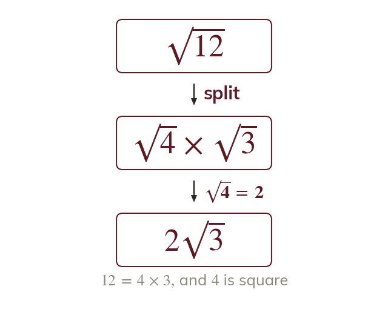
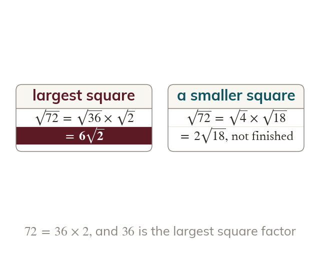
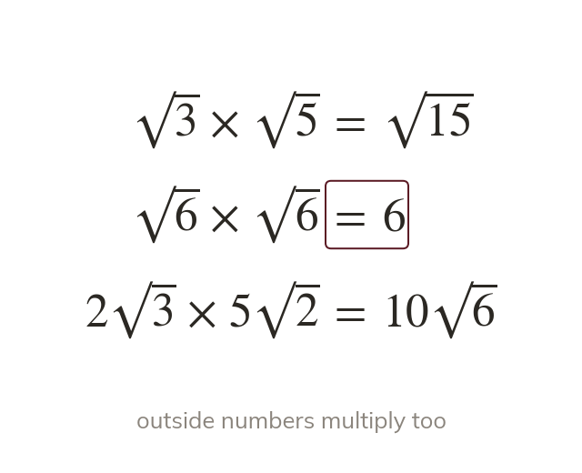
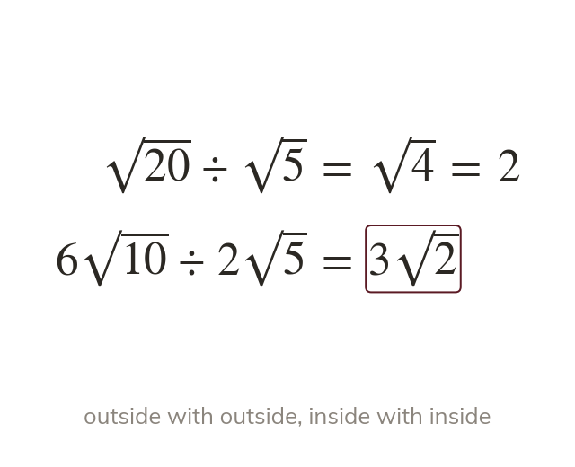

A root splits over a product
The root of a product is the product of the roots. So
cannot be written exactly as a decimal, so an exact answer keeps it as a surd. Today we simplify surds, the first step in every exact calculation with roots.
Work down the page at your own pace. Write every answer in your book first, then click to check it.
Read each card, then follow the worked examples one step at a time.

The root of a product is the product of the roots. So

The largest square factor gives the simplest form at once. A smaller square leaves a surd still to simplify.
Pick an answer. If it's wrong, the feedback tells you which mistake it was.
Read each card, then follow the worked examples one step at a time.

Roots multiply by multiplying the numbers inside. And a whole number.

Roots divide by dividing the numbers inside. Numbers outside the roots divide separately.
Pick an answer. If it's wrong, the feedback tells you which mistake it was.
Finished? Next lesson: 11H.1.2 Expressions with Surds.
For each skill, tap the one that is true for you today. Your Revise pages start with anything you mark Not yet.
Your ratings are saved on this device only.
Log in, then search for a code to practise that skill.
Videos, worksheets and more on each part of this lesson.